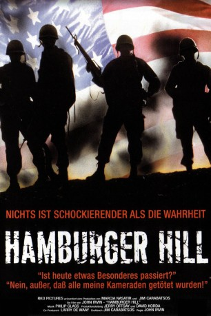

#6882 Hamburger Hill
 
 IMDB-Wertung: 6.7 / 10
IMDB-Wertung: 6.7 / 10  Tomatometer: 100
Tomatometer: 100  Metascore: 0
Metascore: 0 
Im Vietnamkrieg hat die Bravo-Kompanie, in der auch einige Neulinge sind, die von Sergeant Frantz und Offizier "Doc" Johnson im Dschungelkampf ausgebildet werden, den Auftrag, eine Höhe einzunehmen. In den USA wird währenddessen der Krieg besonders von Studenten kritisch beäugt. Den Hügel einzunehmen erweist sich als schwieriger als gedacht. Eine erbitterte Schlacht entwickelt sich. Weil die Soldaten Angst haben, ohne Chance zerschossen zu werden - also wie Hackfleisch zu enden -, bekommt der Hügel den Spitznamen "Hamburger Hill". Dabei haben die Soldaten nicht nur mit extremer Gegenwehr der Nordvietnamesen zu kämpfen, sondern auch gegen die allnächtliche Beschallung mit vietnamesischer Propaganda. Außerdem besteht ständig die Gefahr von Beschuss aus den eigenen Reihen, von sogenanntem "Friedly Fire"...
Jahr: 1987
Dauer: 108 Minuten
FSK: 16
Land: USA Studio: Paramount PicturesTonspuren: DTS - ,
Untertitel: Deutsch,
Auflösung: 1080p (1920x1080) Größe: 13004 MB
Genre: Action, Thriller, Drama, Krieg
Regisseur: John Irvin
Drehbuch: James Carabatsos
Soundtrack:
Darsteller:
- Michael Boatman als Pvt. Ray Motown
 Don Cheadle als Pvt. Johnny Washburn
Don Cheadle als Pvt. Johnny Washburn Dylan McDermott als Sgt. Adam Frantz
Dylan McDermott als Sgt. Adam Frantz- Michael A. Nickles als Pvt. Paul Galvan
- Daniel O'Shea als Pvt. Frank Gaigin
- Tim Quill als Pvt. Joe Beletsky
 Courtney B. Vance als Spc. Abraham 'Doc' Johnson
Courtney B. Vance als Spc. Abraham 'Doc' Johnson Steven Weber als Sfc. Dennis Worcester
Steven Weber als Sfc. Dennis Worcester- Tegan West als Lt. Terry Eden
- Kieu Chinh als Mama San
- Brad Cassini als Myer , uncredited
- Anthony Barrile als Pvt. Vincent 'Alphabet' Languilli
- Michael Dolan als Pvt. Harry Murphy
- Don James als Pvt. Elliott 'Mac' McDaniel
- Harry O'Reilly als Pvt. Michael Duffy
- Tommy Swerdlow als Pvt. Martin Bienstock
- Doug Goodman als Lagunas
- J.C. Palmore als Healy
- J.D. Van Sickle als Newsman
- Bernhard Floedl als Soldier , uncredited
- Baron Jackson als Soldier , uncredited
Datei: X:\1987\Hamburger Hill (1987, FSK16, 1920x1080).mkv seit 06.09.2017
Festplatte: HD 1987-1991
 Es gibt insgesamt 50 Filme in der Gruppe '1987'
Es gibt insgesamt 50 Filme in der Gruppe '1987'